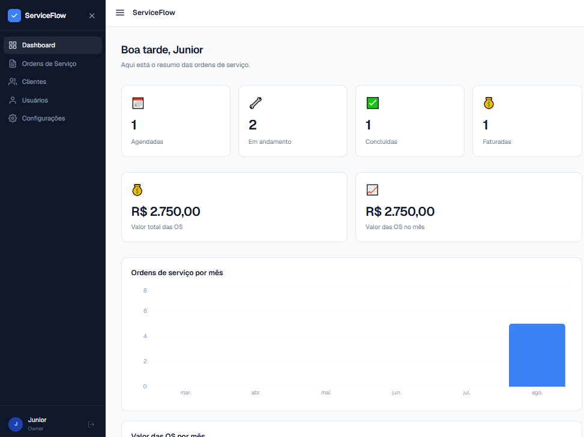
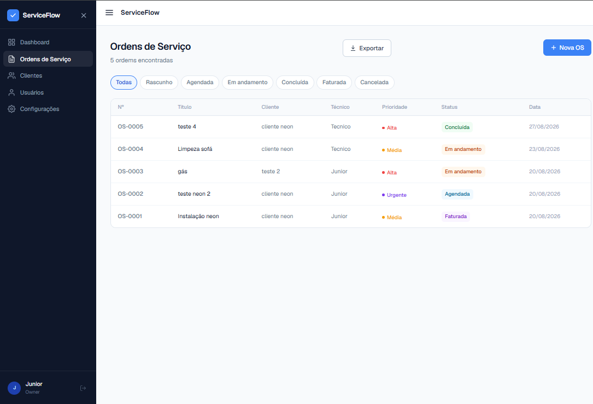
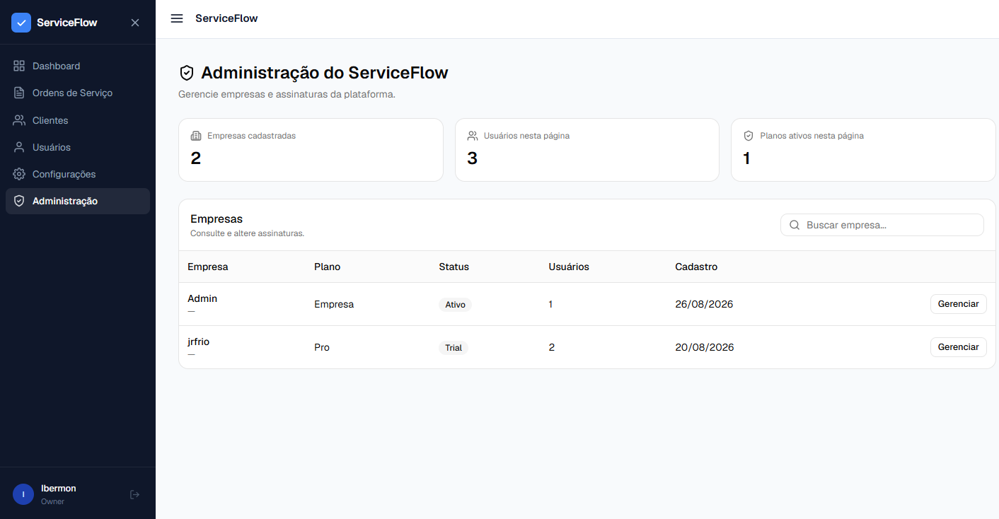

SaaS B2B • Full Stack
ServiceFlow
Plataforma SaaS B2B para gestão de clientes, técnicos e ordens de serviço, com arquitetura multi-tenant, autenticação JWT, controle de acesso, dashboards operacionais e financeiros, exportações, administração da plataforma, testes automatizados, CI e deploy em produção.
01
O problema
Pequenos prestadores de serviços técnicos precisam acompanhar clientes, técnicos, agendamentos e ordens de serviço dentro de operações que muitas vezes dependem de planilhas, mensagens e controles dispersos.
Conforme a operação cresce, aumenta a dificuldade de acompanhar responsabilidades, histórico dos atendimentos, status dos serviços e informações financeiras.
Desafio central
Criar uma plataforma capaz de organizar o ciclo das
ordens de serviço e, ao mesmo tempo, possuir uma
arquitetura preparada para atender múltiplas empresas.
02
A solução
O ServiceFlow foi desenvolvido como uma aplicação SaaS Full Stack com frontend React e uma API REST construída em FastAPI.
Cada empresa opera dentro de seu próprio contexto, enquanto usuários, clientes e ordens de serviço são relacionados ao tenant correspondente.
Ordens de serviço
Criação, agendamento, atribuição, prioridades, itens, valores e status.
Clientes
Cadastro e organização das informações relacionadas aos atendimentos.
Técnicos
Equipes com controle de acesso e escopo operacional por usuário.
Dashboards
Indicadores operacionais e financeiros calculados pelo backend.
Planos
Trial, planos comerciais e limites de utilização por assinatura.
Multi-tenancy
Isolamento lógico de empresas e seus respectivos recursos.
03
Demonstração
O MVP está publicado e pode ser acessado diretamente pelo ambiente de produção. Abaixo estão algumas das principais áreas da aplicação em funcionamento.
Aplicação publicada
ServiceFlow
Navegue pela aplicação e conheça o fluxo de gestão de clientes, técnicos e ordens de serviço.
Abrir ServiceFlow ↗
Produto em funcionamento
Algumas áreas da aplicação
Interface utilizada para acompanhar operação, ordens de serviço e administração da plataforma.



As imagens utilizadas no portfólio devem conter apenas informações fictícias ou anonimizadas.
04
Arquitetura Full Stack
O projeto utiliza um monólito modular, mantendo separação entre interface, API, regras de negócio e persistência.
Frontend
React • TypeScript • Vite
↓
HTTP / Server State
Axios • TanStack Query
↓
REST API
FastAPI • Pydantic • JWT
↓
Service Layer
Regras de negócio e orquestração
↓
Repository Layer
Persistência e consultas
↓
Banco
SQLAlchemy Async • PostgreSQL
05
Multi-tenancy
A empresa é o tenant raiz do sistema e o isolamento utiliza o identificador da empresa nas operações relacionadas.
Contexto próprio
Clientes, usuários, técnicos e ordens pertencem ao tenant correspondente.
Isolamento
Recursos pertencentes a outros tenants não são acessíveis pela aplicação.
Numeração por empresa
A unicidade da ordem utiliza a combinação
empresa + número da OS, permitindo que cada
tenant possua sua própria sequência.
06
Ciclo da ordem de serviço
A ordem de serviço possui uma máquina de estados para impedir transições inconsistentes no fluxo operacional.
DRAFT
OS criada
↓
SCHEDULED
Atendimento programado
↓
IN PROGRESS
Serviço em execução
↓
COMPLETED
Serviço concluído
↓
INVOICED
Fluxo finalizado
Cancelamento controlado
DRAFT, SCHEDULED e IN PROGRESS também
podem ser canceladas. Estados finais
permanecem terminais.
07
Dashboard operacional e financeiro
Os indicadores são calculados no backend através de um endpoint agregado, evitando cálculos baseados em listagens parciais no frontend.
Operação
Ordens por status, evolução mensal e ordens recentes.
Financeiro
Valor total das OS, valor no mês e evolução mensal dos valores.
Regra financeira
Ordens canceladas permanecem no histórico
operacional, mas não entram nos somatórios
financeiros.
08
Exportação de dados
As ordens podem ser exportadas utilizando filtros por período, status, técnico e cliente.
CSV
UTF-8 com BOM, datas formatadas, status traduzidos e proteção contra formula injection.
XLSX
Arquivo Excel real com cabeçalho, filtros, freeze panes, formatação monetária e proteção contra formula injection.
09
Autenticação e RBAC
O ServiceFlow utiliza autenticação JWT com access token e refresh token, além de controle de acesso baseado em função.
OWNER
Acesso ao contexto administrativo da empresa.
ADMIN
Acesso às funções operacionais e administrativas permitidas.
TECHNICIAN
Visualiza e opera somente as ordens atribuídas ao próprio técnico.
VIEWER
Perfil existente, mas ainda com política funcional completa em roadmap.
10
Planos e trial
O produto possui diferentes níveis de assinatura, trial inicial e aplicação de limites conforme o plano utilizado.
Aproximadamente 14 dias
Novas empresas iniciam com acesso ao plano PRO em período de avaliação.
Limites aplicados no backend
1 técnico, 5 clientes e 10 ordens de serviço por mês.
Upgrade comercial
O usuário pode selecionar um plano superior
e iniciar o processo de upgrade por WhatsApp.
Gateway de pagamento permanece no roadmap.
11
Administração da plataforma
O ServiceFlow possui uma área administrativa global separada do RBAC normal de cada tenant.
- Listagem global de empresas.
- Consulta de plano e status.
- Visualização do período de trial.
- Quantidade de usuários.
- Alteração manual de plano.
- Alteração de status da assinatura.
Separação de responsabilidades
Ser OWNER de uma empresa não significa
possuir privilégios globais sobre a plataforma.
12
Segurança
JWT
RBAC
CORS
CSP
HSTS
Rate Limiting
X-Frame-Options
Permissions-Policy
CSP bloqueante
A Content Security Policy está ativa
em modo bloqueante e não utiliza
unsafe-eval.
Limitação conhecida
Os tokens ainda são armazenados em
localStorage e não existe revogação
server-side imediata nesta versão.
13
Testes e qualidade
116 testes automatizados aprovados
A suíte backend cobre autenticação,
autorização, multi-tenancy, usuários,
clientes, ordens, FSM, planos, trial,
dashboard, exportações e administração
da plataforma.
- Autenticação e refresh token.
- RBAC.
- Isolamento multi-tenant.
- Clientes e usuários.
- Ordens de serviço e FSM.
- Trial e limites de plano.
- Dashboard.
- CSV e XLSX.
- Platform Admin.
14
Performance
As páginas do frontend passaram a utilizar carregamento por rota através de React.lazy e Suspense.
~1.060,76 kB
Bundle principal antes da implementação de code splitting.
~351,61 kB
Bundle principal após a otimização das rotas.
Aproximadamente 67% de redução
O JavaScript inicial foi reduzido
significativamente após a implementação
do code splitting.
15
CI e deploy
O projeto utiliza GitHub Actions para validar backend e frontend antes das alterações integrarem o fluxo principal.
GitHub Actions
Testes • Build • Audit • Migrations
↓
Frontend
Vercel
↓
Backend
Render
↓
PostgreSQL
Neon
Ambiente validado
Frontend, backend e banco estão publicados,
e o endpoint de health foi validado
com resposta HTTP 200.
16
Decisões de engenharia
Monólito modular
A aplicação preserva separação de
responsabilidades sem introduzir
microservices antes de existir
necessidade operacional real.
Services e Repositories
Regras de negócio e persistência
permanecem separadas dos endpoints HTTP.
Multi-tenancy desde o domínio
O isolamento por empresa faz parte
da estrutura central da aplicação.
Dashboard calculado no backend
Agregações operacionais e financeiras
não dependem de uma lista parcial
carregada pelo frontend.
17
Limitações conhecidas
- Tokens ainda persistidos no localStorage.
- Não existe revogação server-side imediata.
- Política completa do perfil VIEWER ainda não foi formalizada.
- Geração concorrente de números de OS ainda possui oportunidade de hardening.
- Alguns campos adicionais do contrato de OS ainda precisam ser alinhados com a persistência.
- Gateway de pagamento ainda não faz parte do MVP.
18
Roadmap
- Revogação server-side de tokens.
- Evolução para cookies HttpOnly e políticas de sessão mais robustas.
- Formalização completa do perfil VIEWER.
- Estratégia concorrente mais robusta para numeração das OS.
- Gateway de pagamento.
- Auditoria específica de acessibilidade.
- Evolução contínua de observabilidade e segurança.
ServiceFlow
Um projeto Full Stack construído como produto.
O ServiceFlow combina frontend, API, banco de dados, regras de negócio, multi-tenancy, segurança, testes, otimização, CI e deploy.